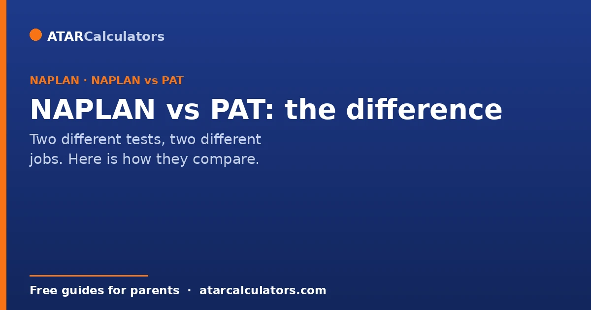
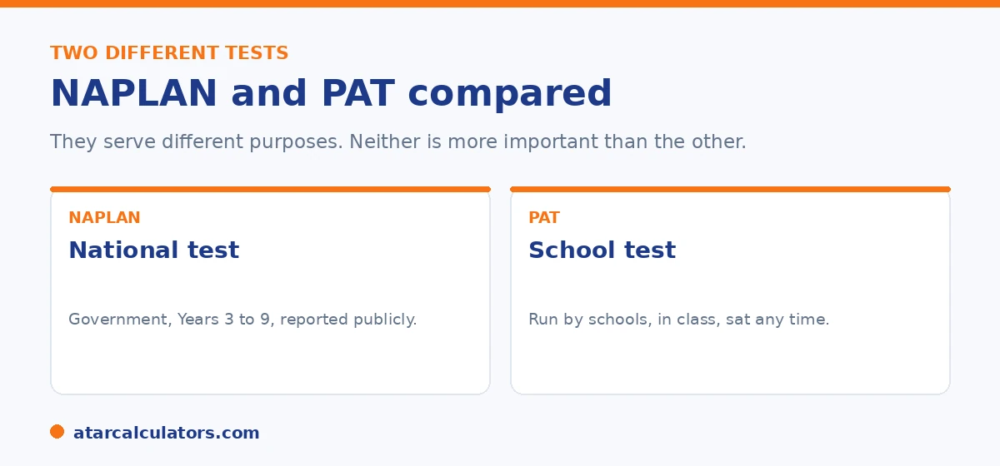

Here is the short version. NAPLAN is a national test run by the government, sat by every student in Years 3, 5, 7 and 9, with results reported publicly. PAT, the Progressive Achievement Tests, is a test many schools choose to run themselves, to track progress through the year. They do different jobs. NAPLAN compares students across the country, while PAT helps teachers follow a class over time. Neither is more important than the other.
Some families see two sets of results: NAPLAN and PAT. It is easy to wonder which one counts, or whether one matters more. The answer is that they are built for different jobs.
Below is a plain comparison. For where your child sits on NAPLAN, use our Year 9 NAPLAN calculator.
Key takeaways
- NAPLAN is a national government test, sat in Years 3, 5, 7 and 9.
- PAT is a test schools choose to run, to track progress.
- NAPLAN compares students across the country, and is reported publicly.
- PAT helps teachers follow a class over the year, and can be sat often.
- They do different jobs, so they are not in competition.
- Neither is more important. Both can be useful.
What NAPLAN is
NAPLAN is the National Assessment Program for Literacy and Numeracy. It is run by the government, and every student sits it in Years 3, 5, 7 and 9. It checks reading, writing, spelling, grammar, and numeracy, on the same test across the country.

Because it is national and standardised, NAPLAN lets you compare a student to others across Australia, and results are reported publicly, for example on the My School website.
What PAT is
PAT stands for the Progressive Achievement Tests. They are produced by ACER, an education research organisation, and schools choose whether to use them. Many schools do, to track how students are progressing in areas like reading and maths.
Unlike NAPLAN, PAT is run by the school, not the government. Schools can use it at different points in the year, and more often, to follow a class over time. PAT results are for the school and the family, and are not reported publicly.
The key differences
The main differences come down to purpose and who runs them. NAPLAN is national, government run, sat at set year levels, and reported publicly. Its job is national comparison. PAT is school chosen, run by the school, can be sat at various times, and stays private. Its job is tracking progress in the classroom.
Both are adaptive in their online forms, and both check skills rather than memorised facts. They simply answer different questions: NAPLAN asks how a student compares nationally, while PAT asks how a student is progressing over time.
Want to see where a Year 9 NAPLAN score sits?
Open the Year 9 NAPLAN calculator →Which one matters more?
Neither is more important, because they are not competing. NAPLAN gives you a national snapshot at set points. PAT gives the school a closer, more frequent view of progress. Together they build a fuller picture.
As a parent, you do not need to choose between them or worry about one over the other. Use each for what it offers, and talk to your child's teacher if a result raises a question. For more on reading NAPLAN results, see our guide to the report.
It helps to know what each test is genuinely good for. This is because they answer different questions. NAPLAN is a point-in-time, national check. It tells you how your child compares to peers across the country in literacy and numeracy at Years 3, 5, 7 and 9. Because it uses the same national scale each time, it can show growth between those widely spaced snapshots. Its limitation is frequency. This is because two years pass between sittings. So it is a broad marker, not a running commentary. PAT (the Progressive Achievement Tests) is the opposite. Schools often run it once or twice a year. So it tracks progress in shorter steps and helps teachers pitch lessons and spot a child who is stalling or racing ahead well before the next NAPLAN. Its results are mainly for the school's use rather than a national comparison. So the sensible way to hold both is this. Read NAPLAN as the occasional national benchmark and any personal growth it shows, and treat PAT as the finer-grained progress tracker the school uses to adjust teaching. Neither predicts your child's future on its own. And a single result in either is one data point, best read alongside their everyday classwork and their teacher's judgement.
Using both together
NAPLAN and PAT do different jobs. NAPLAN gives a national snapshot at set year levels. PAT lets a school track progress through the year against a large reference group.
So the two work well together. One shows where your child stands nationally, the other shows movement over time. Neither defines your child, and both are just information for teachers and families.
Common questions
What is the difference between NAPLAN and PAT?
NAPLAN is a national government test sat in Years 3, 5, 7 and 9, reported publicly. PAT is a test schools choose to run, from ACER, to track progress through the year. They do different jobs.
Is PAT more important than NAPLAN?
Neither is more important. NAPLAN compares students across the country at set points, while PAT helps the school track progress over time. They are built for different purposes.
Do schools use PAT instead of NAPLAN?
No. Schools use PAT besides NAPLAN, not instead of it. NAPLAN is a needed national test, while PAT is a school choice used to follow progress between NAPLAN years.
What does PAT measure?
PAT measures progress in areas like reading and maths. Produced by ACER, it is designed to track how students develop over time, so schools can see growth and target support.
Which should parents focus on?
You do not need to focus on one over the other. Use NAPLAN as a national snapshot and PAT as a closer view of progress, and ask the teacher if any result raises a question.
See where a Year 9 NAPLAN score sits
Enter Year 9 reading and numeracy scores to see the indicative level. Free, and no signup.
Open the Year 9 NAPLAN calculator →Related guides
This guide is general information for parents, not formal advice. NAPLAN and school assessments can change. So check NAPLAN details at the National Assessment Program site and confirm any school testing with your child's school. Reviewed by the ATARCalculators Editorial Team.